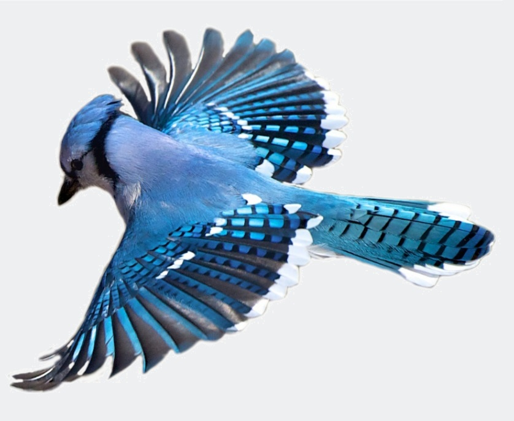

Welcome to the world of birds.

Surely some of the most watched and beloved of Canada's wildlife species are the birds we see in our backyards. Robins and woodpeckers, hummingbirds and goldfinches intrigue us with their antics or cheer us with their songs.
Birds do a fabulous job of helping our ecosystems run smoothly. Here are the top five benefits of healthy bird populations:
- keep insects under control
- pollinate plants and disperse seeds
- bring hundreds of millions of dollars to our economy through bird-watching activities
- provide people of all ages with accessible encounters with nature
- delight and inspire us with their beauty, songs and antics
An important step to reverse these trends begins in your backyards!